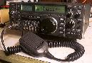

Some info:
As a service to ham radio and hams interested in any of these
radios for purchase, sale, or history, I've got some
reviews/descriptions and pictures up. Enjoy. A note: I don't know
anything about modifications for these radios, so please don't ask. The
best advice I can offer is to utilize your favorite search engine.
![[Front panel of IC-260 -
link to info page]](ic-260/images/ic-260a-bw-sm.jpg) |
IC-260
Information page about the IC-260
2m multi-mode mobile radio. Sold
|
![[Front panel of FT-690R -
link to info page]](ft-690/images/690front-sm.jpg) |
FT-690R
Information page about the FT-690R
Mk I 6m multi-mode portable radio. Sold
|
|  |
IC-735
Information page about the
IC-735 HF radio. Sold
|
| |
FT-221
Information about the Yaesu FT-221 2m multimode radio.
Not for sale |
| Picture of IC-2100H |
IC-2100
Icom IC-2100H review
Not for sale |
And, for some random information, here's a plot
of signal attenuation in Belden 9913 cable. Using data supplied
by Belden.
Back to my homepage index
{kind=link}
{kind=link}